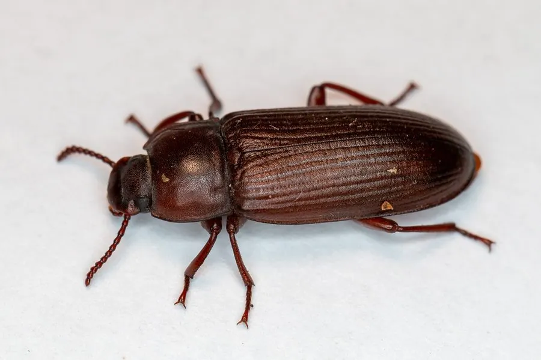

昆虫 · 动物界
黄粉虫 Tenebrio molitor

幼虫被称为面包虫的甲虫，富含蛋白质，是重要的饲料昆虫，也被开发为人类食用昆虫和塑料降解研究对象。
- 分类
- 门节肢动物门纲昆虫纲目鞘翅目科拟步甲科属粉甲属
- 栖息环境
- 粮仓、饲料加工厂与人工养殖场，幼虫生活在麦麸中
- 地理分布
- 全球人工饲养，原产地已难以确定
- 保护级别
- 暂无评估；大规模人工饲养
物种志
黄粉虫成虫体长约 1.2–1.8 cm，体黑褐色，鞘翅有纵纹，不善飞行；幼虫圆柱形，体长约 2–3 cm，呈淡黄色，体节明显，俗称面包虫。
黄粉虫生活史包括卵、幼虫、蛹和成虫四个阶段，一年可繁殖多代，幼虫在麦麸、谷物和蔬菜残渣中取食，人工饲养技术成熟。幼虫蛋白质含量高，是鸟类、爬行动物和水产动物的优质活饵，也被欧盟批准作为新型食品原料，可加工成蛋白粉和零食。近年研究发现黄粉虫幼虫能取食并部分降解聚苯乙烯泡沫塑料，肠道微生物在其中起重要作用，因此成为研究昆虫降解塑料和有机废弃物处理的热点对象。它原为仓储害虫，如今已成为重要的资源昆虫。
形态与习性
- 食性幼虫取食麦麸、谷物和蔬菜残渣
- 体长幼虫约 2–3 cm，成虫约 1.2–1.8 cm
- 生活史卵—幼虫—蛹—成虫，一年可繁殖多代
- 营养价值幼虫蛋白质含量高，可作饲料和食品原料
- 科研可降解聚苯乙烯，肠道微生物起重要作用
- 产业人工饲养技术成熟，是重要资源昆虫
趣味知识
- 黄粉虫的幼虫就是钓鱼和养宠常用的面包虫。
- 欧盟已批准黄粉虫作为新型食品原料，可加工成蛋白粉。
- 研究发现黄粉虫幼虫能取食并部分降解泡沫塑料。